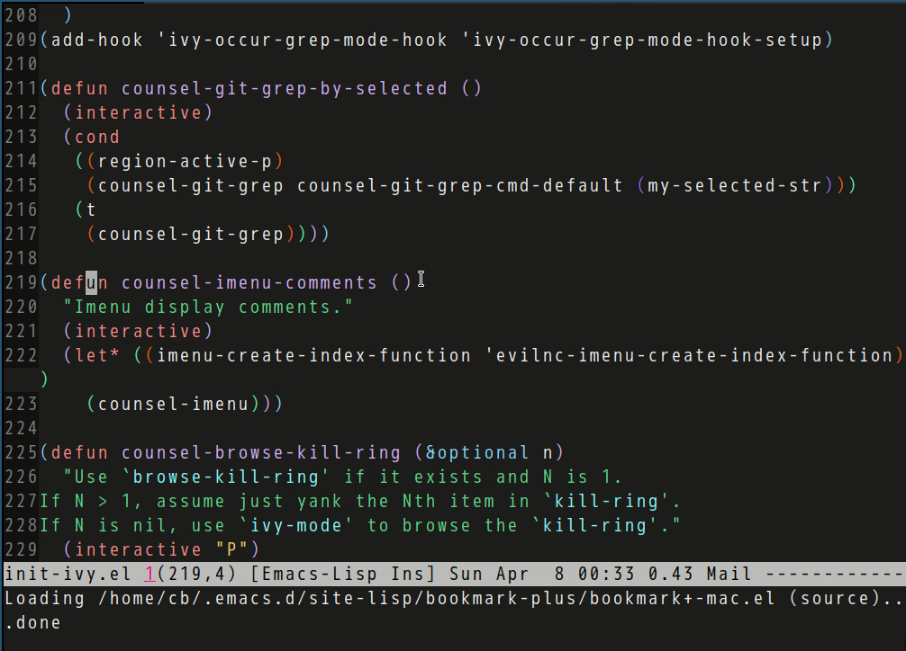

Use Imenu to list comments in current buffer
evil-nerd-commenter v3.2.0 has a new function evilnc-imenu-create-index-function.
Imenu could use this function to list all comments in current file.
Usage:
(require 'counsel)
(defun counsel-imenu-comments ()
"Imenu display comments."
(interactive)
(let* ((imenu-create-index-function 'evilnc-imenu-create-index-function))
(counsel-imenu)))
Screen cast:
